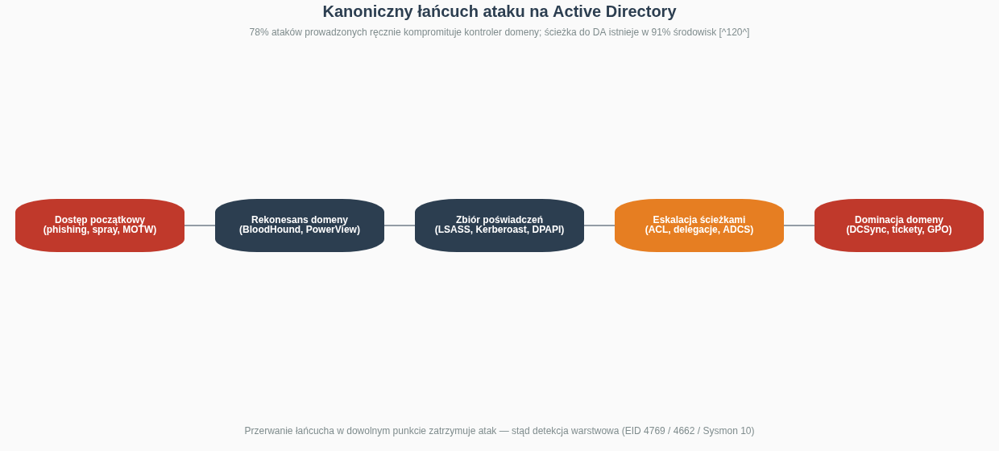
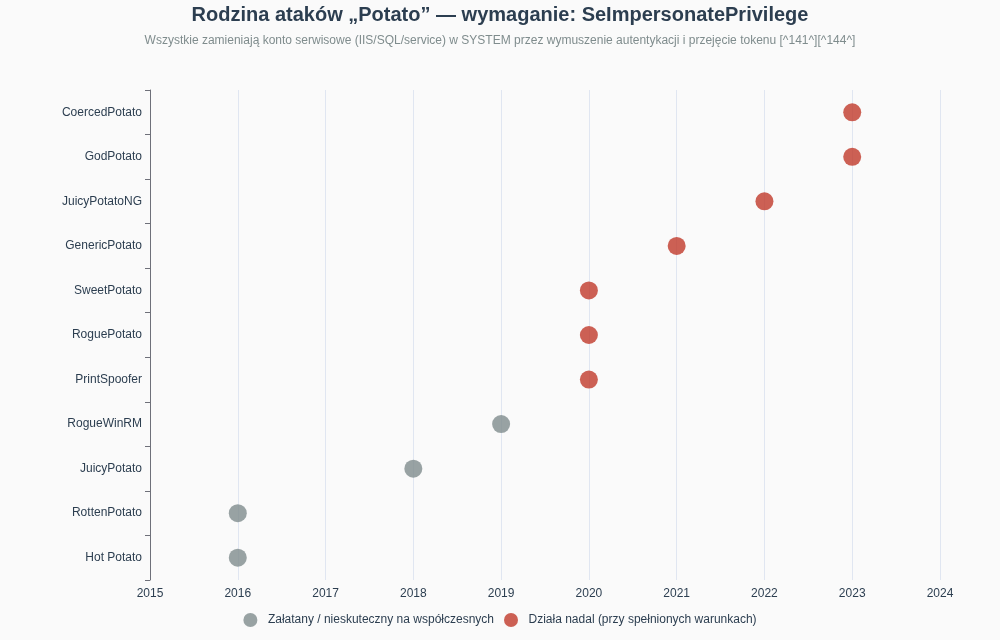
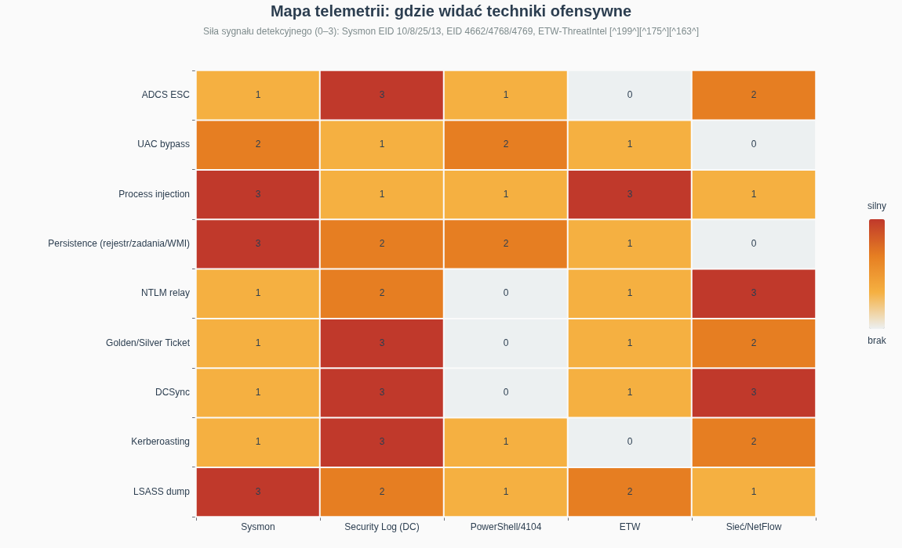
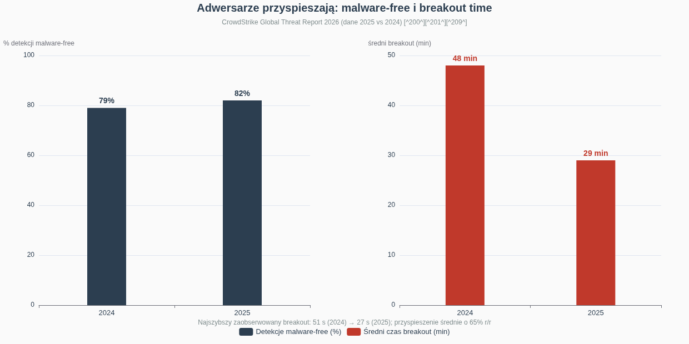

Red Team na Windows — kompendium wiedzy ofensywnej i detekcyjnej
Stan na sierpień 2026 r. Dokument researchowy: metodologia, techniki, narzędzia, infrastruktura i kontrapunkt detekcyjny. Wydanie siostrzane do „Red Team na Linuksie — kompendium wiedzy ofensywnej i detekcyjnej".
Streszczenie wykonawcze
Niniejsze kompendium porządkuje kompletną ścieżkę operacji ofensywnej (red team) w środowiskach Windows i Active Directory — od rekonesansu i dostępu początkowego, przez enumerację hosta i domeny, eskalację uprawnień, utrwalanie dostępu, unikanie detekcji na endpointcie, pozyskiwanie poświadczeń, ruch boczny, aż po dominację domeny, infrastrukturę Command & Control i działania na celu. Dokument jest siostrzaną edycją kompendium linuksowego i zachowuje jego architekturę: każdy etap jest zmapowany na taktyki MITRE ATT&CK i opatrzony kontrapunktem detekcyjnym, ponieważ operacja red team jest oceniana przez to, czy obrona potrafiła ją wykryć — nie przez samo osiągnięcie celu [124]. Uwzględnia najświeższy stan wiedzy: rodzinę ataków Potato wraz z wariantami działającymi na w pełni załatanych systemach oraz techniki unikania EDR od direct syscalls po BYOVD [144][164]. Obok nich omawia współczesne odsłony NTLM relay (CVE-2025-33073), eksploatację AD CS (ESC1–ESC8) i telemetrię detekcyjną opartą o Sysmon, Security Log i ETW [184][186].
Kluczowe wnioski syntetyczne. Po pierwsze, Windows to przede wszystkim gra o tożsamość: Active Directory jest centralnym systemem uwierzytelniania większości organizacji, a jego kompromitacja oznacza kompromitację całego przedsiębiorstwa [127]. Microsoft raportuje, że 78% ataków prowadzonych ręcznie kończy się kompromitacją kontrolera domeny, a badania Akamai pokazują, że w 91% badanych środowisk zwykli użytkownicy mają już dziś wystarczające uprawnienia, by eskalować się do Domain Admina [120]. Po drugie, atakujący nie „włamują się" — logują się: 82% detekcji w 2025 roku było malware-free, a średni czas breakout spadł do 29 minut (najszybszy: 27 sekund), co oznacza, że klasyczna detekcja sygnaturowa jest strukturalnie spóźniona [200]. Po trzecie, eskalacja na hoście Windows to przeważnie błędna konfiguracja, nie exploit: SeImpersonatePrivilege na kontach serwisowych, usługi ze słabymi ACL, ścieżki bez cudzysłowów i DLL-e ładowane z zapisywalnych katalogów dominują nad błędami jądra [141][152]. Po czwarte, detekcja jest możliwa i dobrze udokumentowana: Event ID 4662 z GUID-ami replikacji wykrywa DCSync, a 4769 z szyfrowaniem RC4 — Kerberoasting [175][180]. Sysmon Event ID 10 rejestruje dostęp do pamięci LSASS — problem nie leży w braku sygnałów, lecz w tym, że większość organizacji ich nie zbiera [190].
Zastrzeżenie prawne i etyczne
Wszystkie techniki opisane w tym dokumencie służą wyłącznie celom edukacyjnym, autoryzowanym testom bezpieczeństwa i budowaniu detekcji. Uruchamianie narzędzi ofensywnych na systemach bez wyraźnej, pisemnej zgody właściciela stanowi przestępstwo (w Polsce m.in. art. 267–269 Kodeksu karnego). Profesjonalne operacje red team odbywają się w ramach formalnych Rules of Engagement definiujących zakres, dozwolone techniki, ramy czasowe i procedury dekonfliktacji [124]. Szczególna uwaga dotyczy technik destrukcyjnych lub trudnych w wycofaniu (zmiany ACL w domenie, RBCD, shadow credentials): praktyka operatorska podkreśla obowiązek pełnego cleanupu — usunięcia kont maszynowych, czyszczenia atrybutów delegacji, wycofania wpisów [126]. Autor nie ponosi odpowiedzialności za nadużycia.
1. Fundamenty operacji Red Team na Windows
1.1 Dlaczego Windows i AD to osobna dyscyplina
Operacja red team w środowisku Windows różni się od linuksowej fundamentalnie: celem strategicznym jest niemal zawsze Active Directory, centralny system tożsamości przedsiębiorstwa, którego przejęcie daje kontrolę nad wszystkimi użytkownikami, systemami i danymi [127]. Konsekwencja praktyczna jest taka, że duża część tradecraft windowsowego nie dotyczy exploitów, lecz nadużywania legalnych mechanizmów uwierzytelniania (Kerberos, NTLM), relacji zaufania i błędnych konfiguracji katalogu — a CrowdStrike potwierdza to makroskopowo: 82% detekcji w 2025 roku dotyczyło aktywności malware-free, prowadzonej ważnymi poświadczeniami i zaufanymi przepływami tożsamości [200]. Dlatego MITRE ATT&CK wprowadza tu wspólny język: ponad 200 technik i setki sub-technik Enterprise, z taktyką Defense Evasion wśród najczęściej obserwowanych w realnych intruzjach [121][125].
Druga cecha odróżniająca to szybkość. Średni czas breakout (od dostępu początkowego do ruchu bocznego) spadł w 2025 roku do 29 minut — o 65% szybciej niż rok wcześniej — a najszybszy zaobserwowany wyniósł 27 sekund [200]. Dla operatora oznacza to presję na przygotowanie: enumeracja domeny, zbiory poświadczeń i ruch boczny muszą być przećwiczone do poziomu odruchu. Dla obrońcy — że okno reakcji mierzy się w minutach, więc detekcja musi być zautomatyzowana, a nie analityczna [201].
1.2 Kanoniczny łańcuch ataku na Active Directory
Realistyczny łańcuch ataku na AD ma pięć faz: punkt oparcia (phishing, password spraying, podatność), rekonesans domeny (mapowanie relacji BloodHoundem), zbiór poświadczeń (LSASS, Kerberoasting, DPAPI), eskalacja ścieżkami ataku (ACL, delegacje, AD CS) i dominacja domeny (DCSync, fałszerstwo ticketów, GPO) [120]. Modelowy przykład z 2025 roku: grupa Scattered Spider zadzwoniła na helpdesk Marks & Spencer, podając się za pracownika, i przekonała konsultanta do zresetowania poświadczeń — z tego pojedynczego punktu oparcia przeszła pełnym łańcuchem aż do kradzieży całej bazy AD; sprzedaż online nie działała pięć dni, a kurs akcji spadł o ponad 500 mln funtów [120]. Punkt wejścia nie był zero-dayem — był nim telefon i podręcznikowa ścieżka ataku [120].

Kluczowa konsekwencja metodologiczna: atakujący podąża przewidywalną ścieżką rekonesans → enumeracja → poświadczenia → eskalacja, a przerwanie łańcucha w dowolnym punkcie zatrzymuje atak [118]. To dlatego taktyka „assume breach" i detekcja warstwowa — na poświadczeniach, na replikacji, na ticketach — jest skuteczniejsza niż utwardzanie samego obwodu. Najczęstszym punktem oparcia nie są exploity, lecz ważne poświadczenia i zaufane przepływy tożsamości [200].
1.3 OPSEC na endpointcie Windows: MOTW, AMSI, EDR
Operator na Windows pracuje w najbardziej instrumnetowanym ekosystemie świata: AMSI skanuje skrypty przed wykonaniem, ETW dostarcza telemetrię behawioralną, Defender i EDR hookują API userland, a Sysmon (jeśli wdrożony) widzi procesy, sieć, rejestr i dostęp do pamięci [163][199]. Już na etapie dostarczania payloadu działa Mark of the Web — identyfikator strefy (Zone.Identifier) dołączany do plików z przeglądarki/poczty, który wyzwala Protected View i blokady makr; operacyjne obejścia obejmują pliki z lokalizacji zaufanych, udziały wewnętrzne (pliki lokalne nie mają MOTW), formaty nieoznaczane MOTW (historycznie OneNote, ISO, VHD) czy HTML smuggling [130]. Profesjonalny kurs operatorski (np. SANS SEC665) uczy dostępu początkowego przez nadużycie formatów plików, DLL side-loading, podpisane payloady i AiTM phishing omijający MFA przez kradzież sesji — zawsze z analizą kompromisów detekcyjnych [123].
Zasada nadrzędna OPSEC pozostaje identyczna jak w świecie linuksowym: minimalizacja śladu (egzekucja w pamięci, BOF-y zamiast fork&run, unikanie zapisu na dysk), segregacja infrastruktury, wolne tempo oraz świadomość, że każde narzędzie ma profil detekcyjny — WinPEAS jest „głośny, ale kompletny", Seatbelt daje lepszy OPSEC, a ingest SharpHounda generuje rozpoznawalny wzorzec zapytań LDAP i RPC [132][140]. Operator wybiera narzędzie pod profil obrony celu, nie pod wygodę.
2. Rekonesans i dostęp początkowy (TA0043, TA0001)
2.1 Rekonesans zewnętrzny i wstępna enumeracja domeny
Rekonesans zewnętrzny obejmuje OSINT (rejestry domen, certyfikaty, Google dorks, media społecznościowe, wycieki poświadczeń) oraz mapowanie powierzchni: VPN-y, bramy RDP, panele webowe, usługi pocztowe [126]. Po stronie wewnętrznej, jeszcze przed zdobyciem poświadczeń, operator identyfikuje domenę i kontrolery przez DNS (nslookup -type=SRV _ldap._tcp.dc._msdcs.target.local), enumeruje udziały SMB anonimowo i skanuje porty LDAP/Kerberos — samo to często ujawnia topologię i nazewnictwo hostów [126]. Password spraying na usługach wystawionych na zewnątrz (OWA, VPN, Entra ID) pozostaje jednym z najskuteczniejszych wektorów — pojedyncze hasło typu „Sezon2026!" testowane przeciwko wszystkim kontom omija polityki blokad, które zatrzymałyby brute force [126].
Z ważnym kontem domenowym — nawet najniżej uprzywilejowanym — powierzchnia enumeracji otwiera się dramatycznie: domyślnie wszyscy uwierzytelnieni użytkownicy mogą odpytywać LDAP o niemal całą zawartość katalogu, łącznie z użytkownikami, grupami, komputerami, ACL-ami i relacjami zaufania [131][133]. To fundamentalna asymetria AD: katalog jest czytelny dla każdego, a uprawnień nie da się w praktyce rzetelnie audytować ręcznie — można więc ścieżki ataku tylko usuwać, nie „ukrywać" [122].
2.2 Wektory initial access: phishing, dokumenty, HTML smuggling
Dominującym wektorem dostępu początkowego pozostaje phishing z payloadem wykonywalnym: makra VBA, zdalna iniekcja szablonów (remote template injection), HTML smuggling (składanie pliku po stronie przeglądarki, poza inspekcją proxy), pliki skrótów i archiwa omijające MOTW [130]. CrowdStrike notuje eksplozję podsekcji socjotechnicznej: 563% wzrost incydentów z fałszywymi CAPTCHA (ClickFix — ofiara sama wkleja złośliwe polecenie PowerShell) i 141% wzrost spamu [200]. W kampanii wykrytej przez Fortinet zmodyfikowanego agenta Havoc Demon dostarczano właśnie socjotechniką, a C2 tunelowano przez Microsoft Graph API i SharePoint — legalne usługi jako kanał kontroli [219].
Dostęp przez podatności i brokery dostępu stanowi równoległy nurt: 42% wzrost zero-dayów eksploatowanych przed publikacją, systematyczne celowanie w urządzenia brzegowe (VPN, firewalle) oraz rynek access brokerów sprzedających gotowe footholdy operatorom ransomware [200][209]. Z punktu widzenia planowania operacji red team wektor initial access dobiera się do profilu przeciwnika, którego się emuluje — i do ROE, które określa, czy socjotechnika jest w zakresie [124].
3. Enumeracja po kompromitacji (TA0007)
3.1 Enumeracja hosta: WinPEAS, Seatbelt, PowerUp
Na pojedynczym hoście checklista privesc jest dobrze zindustrializowana: WinPEAS (z rodziny PEASS-ng) wykonuje szeroki audyt — poświadczenia w rejestrze i plikach, uprawnienia usług, zadania harmonogramu, instalatory MSI, brakujące patche — kolorując wyniki według prawdopodobieństwa eksploatacji [136][132]. Seatbelt (GhostPack) robi pogłębiony „security survey" hosta: ustawienia obronne, tokeny, UAC, LAPS, Credential Guard, zalogowani użytkownicy, ciekawe pliki — i jest preferowany w operacjach covert, bo jest cichszy niż WinPEAS [132]. PowerUp/SharpUp celują w konkretne błędy usług (binpath, ACL, unquoted paths) z funkcjami automatycznego uzbrojenia, a Watson/Sherlock dopasowują brakujące hotfixy do publicznych exploitów jądra [152][132]. Rekomendowany przepływ pracy: WinPEAS dla szerokiego rozpoznania → Watson dla kernela → Seatbelt dla ukierunkowanych kontroli → PowerUp tam, gdzie znaleziono wektor [132].
Ręczne checki pozostają kanonem, bo każda automatyzacja ma sygnaturę: whoami /priv (SeImpersonate? SeDebug?), wmic service get name,pathname,startmode z filtrami na ścieżki bez cudzysłowów, accesschk.exe -uwcqv "Authenticated Users" * na uprawnienia usług, icacls na binaria usług, zapytania rejestru o AlwaysInstallElevated i AutoRuny, schtasks /query /fo LIST /v, cmdkey /list, findstr /si password *.txt *.ini *.config oraz przegląd plików unattend [152]. Wartościowe są też pliki Polityki Grup z hasłami (historyczny cpassword w GPP), skrypty logowania na SYSVOL i udziały z plikami konfiguracyjnymi [128].
3.2 Enumeracja domeny: PowerView i natywne moduły
PowerView (PowerSploit) to standard enumeracji AD z poziomu zwykłego użytkownika — nie wymaga uprawnień administracyjnych ani instalacji RSAT, bo korzysta z hooków AD PowerShella i Win32 API [134][133]. Kanoniczny zestaw: Get-NetDomain/Get-NetForest (granice środowiska), Get-NetDomainController (cele wysokiej wartości), Get-NetUser z filtrowaniem po pwdlastset, SPN (Get-NetUser -SPN → kandydaci do Kerberoasting), Get-DomainGroupMember "Domain Admins" -Recurse, Invoke-ShareFinder i Find-InterestingDomainShareFile (udziały z sekretami), Get-ObjectAcl (niebezpieczne prawa: GenericAll, GenericWrite, WriteDacl, WriteOwner, ForceChangePassword), Get-DomainTrustMapping (mapa zaufania) oraz Find-LocalAdminAccess i Test-AdminAccess (gdzie mam admina) [138][135]. Poszukiwanie haseł w polu Description (Find-UserField -SearchField Description -SearchTerm "pass") to klasyk, który wciąż przynosi efekty [137].
OPSEC enumeracji domenowej to gra o wzorzec zapytań: masowe zapytania LDAP o nietypowych filtrach, rekurencyjne rozwiązywanie grup i skanowanie sesji po wszystkich hostach tworzą sygnaturę wykrywalną dla rozwiązań identity detection i dobrych reguł SIEM (nagły wzrost zapytań katalogowych z jednego konta) [120][140]. Operator zważa tempo, używa atrybutów docelowych zamiast -Properties * i preferuje kolektory jednoprzebiegowe.
3.3 BloodHound i SharpHound: graf jako mapa operacji
BloodHound zamienia surową enumerację w graf relacji — użytkownicy, grupy, komputery, GPO, sesje i ACL-e jako węzły i krawędzie — i odpowiada na pytanie, którego żadna płaska lista nie udzieli: jaka jest najkrótsza ścieżka od mojego konta do Domain Admina [118][119]. Kolektor SharpHound (C#, warianty PowerShell/Python/Rust) zbiera dane podpisanymi zapytaniami LDAP do DC oraz RPC/SMB do hostów (grupy lokalne, sesje) — w trybie -c All, do uruchomienia w pamięci z implantu [131][140]. Predefiniowane zapytania, od których zaczyna się każdą operację: Shortest Paths to Domain Admins, Principals with DCSync Rights, AS-REP Roastable Users, Kerberoastable Members of High Value Groups oraz Shortest Paths from Owned Principals [119].
BloodHound jest równie cenną bronią obrońców. SpecterOps pokazuje, że nawet „małe" środowisko z tysiącem endpointów ma zwykle miliony ścieżek ataku — naprawianie pojedynczej ścieżki wskazanej w raporcie red teamu przypomina zatem zamykanie jednej uliczki na trasie z Seattle do Nowego Jorku; skuteczne jest tylko systemowe zarządzanie ścieżkami (Attack Path Management) i usuwanie węzłów o największej przepustowości [122]. Typowe naprawy: usunięcie zbędnego zagnieżdżania grup w DA, audyt ACL-i (GenericAll/WriteDacl/WriteOwner bez uzasadnienia), wyłączenie delegacji nieograniczonej, tiering administracyjny, LAPS i korekta flag DONT_REQ_PREAUTH [119]. Detekcja samego SharpHounda to osobny temat: charakterystyczny wzorzec LDAP+RPC+SMB zakończony wyeksportowaniem ZIP-a jest rozpoznawalny — stąd w operacjach covert stosuje się zbieranie rozciągnięte w czasie lub ograniczone metody [140].
| Narzędzie | Warstwa | Uprawnienia | Kluczowa zaleta | Sygnatura detekcyjna |
|---|---|---|---|---|
| WinPEAS | host | użytkownik | setki kontroli, priorytetyzacja [136] | głośna, serie odczytów rejestru/usług [132] |
| Seatbelt | host | użytkownik | survey postawy obronnej, lepszy OPSEC [132] | umiarkowana |
| PowerUp/SharpUp | host | użytkownik | auto-eksploatacja błędów usług [152] | AMSI (PowerShell), znane sygnatury |
| Watson | host | użytkownik | dopasowanie CVE do buildu [132] | niska |
| PowerView | domena | użytkownik domenowy | pełna enumeracja AD bez RSAT [134] | wzorce LDAP, AMSI |
| SharpHound | domena | użytkownik domenowy | graf ścieżek ataku [131] | LDAP+RPC+SMB+ZIP [140] |
| NetExec (nxc) | sieć | zależnie | spray, walidacja Pwn3d!, moduły [118] | wzorce SMB/RPC, logony sieciowe |
4. Eskalacja uprawnień (TA0004)
4.1 Rodzina Potato: SeImpersonatePrivilege jako krótka droga do SYSTEM
Przywilej SeImpersonatePrivilege — domyślnie przydzielany kontom usługowym (IIS, MSSQL i pochodne) — pozwala procesowi podszywać się pod klienta; rodzina ataków Potato zamienia ten mechanizm w pełną eskalację, zmuszając wysoce uprzywilejowany komponent (usługa RPC/DCOM, EFSRPC, Print Spooler) do uwierzytelnienia się do sfałszowanego punktu końcowego, po czym przechwytuje i podszywa się pod jego token SYSTEM [141][144]. Ewolucja rodziny to historia wyścigu zbrojeń: HotPotato (2016) przez NTLM relay z HTTP na SMB, Rotten/JuicyPotato z abstrakcją RPC CLSID, RoguePotato z OXID resolver na alternatywnym porcie, PrintSpoofer przez Print Spooler, SweetPotato jako unifikacja, GodPotato na Server 2012–2022, a kolejne warianty (LocalPotato, EfsPotato, RemotePotato) eksplorują nowe interfejsy wymuszania uwierzytelnienia [141]. Najnowsze odsłony (linia CoercedPotato) demonstrowano na w pełni załatanych wówczas Windows 11 i Server 2025 — potwierdzając, że „selekcja Potato" pozostaje aktualnym ćwiczeniem operatorskim [144].
Detekcja: nietypowe procesy-dzieci usług (cmd/powershell jako dziecko spoolsv.exe, svchost.exe), tworzenie tokenów przez konta usługowe, zdarzenia tworzenia usługi (7045) tuż po uwierzytelnieniach z konta IIS/MSSQL [141]. Środki zaradcze obejmują wyłączanie zbędnych usług wymuszania (Print Spooler na serwerach bez druku), ograniczanie kont z SeImpersonate/SeAssignPrimaryToken i aktualizacje systemowe łatające kolejne warianty [144].

4.2 Błędne konfiguracje usług, rejestru i instalatorów
Najpowszechniejsza praktyczna oś eskalacji to usługi Windows: gdy zwykły użytkownik ma prawa modyfikacji do konfiguracji usługi (SERVICE_CHANGE_CONFIG przez sc config binpath=) lub do jej binarki (FILE_WRITE_DATA w katalogu usługi), restart usługi uruchamia kod atakującego jako SYSTEM [152]. Wariant unquoted service path wykorzystuje fakt, że ścieżka C:\Program Files\App Name\service.exe bez cudzysłowów jest rozwiązywana iteracyjnie — wystarczy upuścić złośliwe App.exe do C:\Program Files\, jeśli katalog jest zapisywalny [152]. Analogiczne efekty daje DLL hijacking w zapisywalnych katalogach aplikacji działających jako SYSTEM oraz nadpisywanie binarek zadań harmonogramu [158].
W rejestrze kluczowe są: AlwaysInstallElevated (oba klucze HKLM i HKCU ustawione na 1 → dowolny MSI instalowany jako SYSTEM, uzbrajany np. przez msfvenom -f msi lub msiexec /i), AutoRuny wskazujące zapisywalne pliki, klucze Image File Execution Options z zapisywalnymi Debuggerami oraz poświadczenia w kluczach typu HKLM\SOFTWARE\Microsoft\Windows NT\CurrentVersion\Winlogon (AutoAdminLogon) [152]. Zadania harmonogramu, udziały z binariami usług, pliki unattend z hasłami, zapamiętane poświadczenia (cmdkey /list) i katalogi instalatorów dopełniają checklistę [152].
4.3 Obejścia UAC i exploity jądra
UAC nie jest granicą bezpieczeństwa — to mechanizm wygody — ale jej obejście jest krokiem wymaganym w drodze z medium integrity do high/system: katalog UACME utrzymuje dziesiątki metod, z których najbardziej znane to fodhelper/eventvwr (hijack kluczy HKCU ms-settings), autoelevating COM (CMSTPLUA), DLL side-loading do auto-elewujących binarek systemowych oraz computerdefaults; wszystkie działają z HKCU, więc nie wymagają zapisu do lokalizacji chronionych [156][152]. Detekcja: Sysmon EID 12/13 (zdarzenia rejestru w ścieżkach shell\open\command), uruchomienia autoelewujących binarek z nietypowych katalogów, relacje rodzic-dziecko (fodhelper → cmd) [199][202].
Exploity jądra to ostateczność — głośne, ryzykowne dla stabilności, lecz skuteczne, gdy cel jest niezałatany: dopasowanie przez systeminfo i Watson/Sherlock [152]. Aktualny krajobraz to m.in. CVE-2025-62215 (Windows Kernel, race condition → SYSTEM, trafił do katalogu KEV po eksploatacji in-the-wild i został załatany w listopadowym Patch Tuesday) [146][150]. Świeże pozycje z 2026 roku to CVE-2026-40369 (Win32k) i CVE-2026-24289 — stały strumień EoP-ów jądra utrzymuje presję na okno patchowania [142][143]. W operacjach red team exploity jądra stosuje się wyjątkowo — preferencja idzie ku błędnym konfiguracjom i nadużyciom tożsamości, bo są cichsze i odtwarzalne [118].
5. Utrwalanie dostępu (TA0003)
5.1 Mechanizmy na hoście
Taksonomia persistence na Windowsie jest szeroka: klucze Run/RunOnce (HKLM/HKCU, w tym Winlogon\Userinit, Image File Execution Options z Debugger), zadania harmonogramu (schtasks /create /sc onlogon, warianty z najwyższymi uprawnieniami), usługi (sc create / modyfikacja binpath), WMI event subscription (trójka EventFilter→Consumer→Binding, bezplikowa i trudna w audycie), DLL search order hijacking / COM hijacking (HKCU nad HKLM w klasach COM) oraz konta lokalne/backdoorowe [160][158]. W domenie dochodzą wektory katalogowe: AdminSDHolder (dziedziczenie złośliwych ACE na chronione grupy), GPO (modyfikacja polityki = wykonanie kodu na setkach hostów), SIDHistory injection oraz szkieletowe klucze (Skeleton Key na DC) [128][120].
Stealth persistence to osobna sztuka: timestomping binarek, nazwy imitujące komponenty systemowe, legitymne podpisy przez side-loading podpisanych binarek, przechowywanie payloadów w ADS/rejestrze, oraz warianty bezplikowe (WMI, COM) minimalizujące artefakty dyskowe [160]. Detekcja opiera się o Sysmon EID 12–14 (rejestr), zdarzenia 7045/4697 (usługi), 4698/4702 (zadania), 5861 (konsumenci WMI), baselining AutoRuns (narzędzie Sysinternals) i okresowe porównania z golden image [199][160].
5.2 Tożsamość jako persistence: tickety Kerberosa
W środowisku AD najtrwalszą formą persistence są sfabrykowane poświadczenia: Golden Ticket (TGT podpisany skradzionym hashem krbtgt — domyślnie ważny nawet 10 lat, niezależny od DC), Silver Ticket (TGS usługi podpisany hashem konta usługowego — nie wymaga kontaktu z DC po wykuwaniu) oraz Diamond Ticket (legalnie pozyskany TGT, którego pola są modyfikowane przed ponownym podpisaniem — bardziej spójny kryptograficznie i cichszy niż golden) [155][159]. Golden Ticket przetrwa nawet zmianę hasła skompromitowanego użytkownika; wymusza podwójny reset hasła krbtgt — dwukrotny, z odstępem na replikację i wygaśnięcie ticketów, bo AD przechowuje dwa ostatnie hashe [120].
Detekcja fałszywych ticketów to analiza niespójności: Golden Ticket często łamie rozsądne wartości (okresy ważności, PAC), Silver Ticket nie generuje zdarzeń 4768/4769 na DC (brak wymiany AS/TGS) — widoczne są tylko logony usługowe na hoście docelowym; Diamond Ticket bywa cichszy, bo zachowuje legalny przepływ [153][120]. Zdarzenia 4769 z nietypowymi kontami, dziesięcioletnie czasy życia ticketów i brakujące kroki protokołu to sygnały, które powinny być w SIEM każdej organizacji monitorującej DC [157].
| Mechanizm | Zakres | Trwałość | Kluczowa detekcja |
|---|---|---|---|
| Run keys / IFEO | host | do usunięcia | Sysmon 12–14, AutoRuns diff [160] |
| Zadania harmonogramu | host | do usunięcia | 4698/4702, Sysmon 1 (schtasks) [199] |
| Usługi | host | do usunięcia | 7045/4697 [160] |
| WMI subscription | host | bezplikowa | 5861, audyt root\subscription [160] |
| COM/DLL hijack | host | do usunięcia | Sysmon 7/12–14, AppLocker/WDAC [158] |
| AdminSDHolder / GPO | domena | dziedziczone | 5136 (zmiany atrybutów), audyt SD [128] |
| Golden/Diamond Ticket | domena | do resetu krbtgt ×2 | niespójności 4768/4769/4624 [154] |
| Silver Ticket | usługa | do resetu hasła konta | brak 4769 przy logonach usługowych [159] |
| Skeleton Key | DC | do restartu/łaty | 7045 na kontrolerze domeny [120] |
6. Unikanie detekcji na endpointcie (TA0005)
6.1 AMSI i ETW: oślepianie sensorów
AMSI (Antimalware Scan Interface) przechwytuje skrypty PowerShell/JScript/VBA przed wykonaniem i przekazuje je skanerowi; klasyczne obejścia to in-memory patch funkcji AmsiScanBuffer w amsi.dll (nadpisanie prologu tak, by zwracała AMSI_RESULT_CLEAN), wymuszanie błędów inicjalizacji oraz — coraz częściej — unikanie kodu zarządzanego (BOF-y, natywne PE) zamiast walki z silnikiem skryptowym [163][172]. ETW (Event Tracing for Windows) zasila telemetrię Defendera i EDR; obejścia obejmują patch EtwEventWrite, wyłączanie providerów w procesie implantu oraz uruchamianie w procesach, których EDR nie instrumentuje [164]. Oba mechanizmy są dziś chronione przez tamper protection i PPL, więc patchowanie jest możliwe przeważnie dopiero po eskalacji lub w obrębie własnego procesu — i samo w sobie generuje telemetrię (podejrzany dostęp do modułów systemowych widzą Sysmon i EDR) [199][164].
6.2 Iniekcje procesów: taksonomia i sygnatury
Taksonomia iniekcji obejmuje: klasyczną (OpenProcess→VirtualAllocEx→WriteProcessMemory→CreateRemoteThread), DLL injection (LoadLibrary przez remote thread), process hollowing (utworzenie zawieszonego procesu, wymiana obrazu, wznowienie), APC injection (w tym EarlyBird na zawieszonych wątkach), AtomBombing (tablice atomów), thread execution hijacking oraz warianty typu module stomping i phantom DLL hollowing [162][161]. Każda wariantyzacja to próba uniknięcia reguł Sysmon: EID 8 (CreateRemoteThread) widzi klasyczne wstrzyknięcia, EID 10 (ProcessAccess) widzi otwarcie procesu z maskami dostępu do zapisu pamięci — dlatego współczesny tradecraft preferuje syscalls, mapowania sekcji i wczesne fazy życia procesu, gdzie telemetria jest rzadsza [199][171].
6.3 Direct i indirect syscalls: zejście poniżej hooków
EDR-y hookują funkcje ntdll.dll w userland, by widzieć wywołania systemowe procesu; odpowiedzią ofensywną są direct syscalls — wykonanie instrukcji syscall bezpośrednio z pamięci implantu z własnoręcznie ustawionym numerem SSN (SysWhispers i następcy generują stub-y pod konkretną wersję systemu), co omija hooki ntdll [165][170]. Problem: statyczne SSN-y psują się przy aktualizacjach systemu, a skok do syscall spoza ntdll bywa anomalią. Indirect syscalls (Hell's Gate, Halo's Gate, Tartarus Gate) rozwiązują to, wyszukując wolny od hooków fragment syscall; ret wewnątrz ntdll i skacząc do niego — stos wywołań wygląda wtedy legalnie [164][165]. Kontrdetekcja EDR to analiza call stacków (telemetria ETW-TI), inspekcja pamięci wątków uśpionych oraz wykrywanie sleep obfuscation (Ekko, FOLIAGE — szyfrowanie pamięci implantu na czas snu, by zmylić skany pamięci) [168][166].
6.4 BYOVD, BYOI i wyłączanie EDR
Najcięższy krok eskalacyjny tradecraftu to wyłączenie samego sensora: BYOVD (Bring Your Own Vulnerable Driver) instaluje legalnie podpisany, lecz podatny sterownik i przez niego z jądra ubija procesy/callbacki EDR — katalog LOLDrivers indeksuje setki takich sterowników, a grupy ransomware rutynowo wdrażają dedykowane „EDR killery" [209][168]. BYOI (Bring Your Own Installer) wykorzystuje legalne narzędzia administracyjne — instalatory i agentów zdalnego zarządzania (RMM: AnyDesk, ScreenConnect, Tactical RMM) — jako nośnik trwałego dostępu, bo generują legalny ruch i podpisane binaria [209][213]. Detekcja: ładowanie sterowników spoza whitelisty (Sysmon EID 6), reguły oparte o katalog LOLDrivers (hashe/sygnatury), alerty na instalację RMM spoza katalogu firmowego oraz monitoring zmian konfiguracji Defendera (EID 5007) i wyłączeń tamper protection [199][209].
7. Dostęp do poświadczeń (TA0006)
7.1 LSASS i lokalne magazyny sekretów
LSASS (lsass.exe) trzyma w pamięci sekrety zalogowanych użytkowników (hashe NTLM, tickety Kerberosa, hasła w reversible encryption), więc jego zrzut to najkrótsza droga do rozległego ruchu bocznego: techniki to Mimikatz (sekurlsa::logonpasswords), zrzut przez legalne narzędzia (comsvcs.dll: rundll32.exe C:\Windows\System32\comsvcs.dll, MiniDump <pid> <path> full, procdump, Task Manager) oraz nanodump i pochodne z syscalls omijające hooki [190][196]. Kontr: LSA Protection (PPL) wymusza podpisane pluginy i blokuje dostęp niepodpisanym procesom, a Credential Guard (VBS) izoluje sekrety w enklawie hiperwizora [190]. Telemetria kanoniczna to Sysmon EID 10 (ProcessAccess do lsass z charakterystycznymi maskami dostępu), EID 11 (zapis lsass.dmp) oraz gotowe reguły detekcyjne na zrzuty pamięci LSASS — z tym że Credential Guard nie chroni ticketów w użyciu ani kont serwisowych poza zakresem izolacji [195][199]. Obok LSASS: SAM/SECURITY/SYSTEM (hashe kont lokalnych, reg save lub wolumen cieni), LSA secrets (hasła kont usług), cache logowań domenowych (MSCASHv2 — nie do PtH, lecz do łamania offline) oraz pamięć menedżerów haseł i przeglądarek [190].
7.2 Kerberoasting, AS-REP roasting
Kerberoasting wykorzystuje fakt, że każdy uwierzytelniony użytkownik może zamówić ticket usługowy (TGS) dla dowolnego konta z SPN — a fragment TGS jest szyfrowany kluczem pochodzącym od hasła konta usługowego, więc da się go łamać offline (Rubeus kerberoast → Hashcat -m 13100 dla RC4) [180][120]. Enumeracja celów: Get-NetUser -SPN (PowerView) lub GetUserSPNs.py (Impacket) [138]. Detekcja jest dojrzała: EID 4769 z szyfrowaniem RC4 (0x17) tam, gdzie normalnie dominuje AES (0x12), bursty zapytań o wiele SPN-ów z jednego hosta — to jedna z najwyżej sygnalizujących reguł AD, bo narzędzia atakujących celowo zamawiają RC4, szybszy w łamaniu [120]. AS-REP roasting celuje w konta z flagą DONT_REQ_PREAUTH: odpowiedź AS-REP zawiera dane szyfrowane kluczem użytkownika — łamane offline (GetNPUsers.py, Rubeus asreproast), a detekcją jest EID 4768 z pre-authentication type 0 [120]. Obrona: długie losowe hasła kont usługowych (gMSA), usuwanie DONT_REQ_PREAUTH, monitoring 4768/4769 [180].
7.3 DCSync: replikacja jako broń
DCSync symuluje kontroler domeny i przez protokół replikacji (MS-DRSR, DsGetNCChanges) wyciąga hashe dowolnych kont — w tym krbtgt — bez logowania na DC i bez dumpowania NTDS.dit z dysku [173][175]. Wymagane prawa to trójka rozszerzonych praw replikacji na obiekcie domeny: DS-Replication-Get-Changes (GUID 1131f6aa…), …-All (1131f6ad…) oraz opcjonalnie …-In-Filtered-Set; domyślnie mają je Administratorzy, Domain Admins, Enterprise Admins i kontrolery domeny — ale przez błędne ACL-e często także konta serwisowe „do backupu AD" [175]. Realizacja: secretsdump.py 'DOMAIN/user:pass@DC' -just-dc lub lsadump::dcsync /user:krbtgt (Mimikatz) [173]. Detekcja kanoniczna: EID 4662 (Directory Service Access) z wymienionymi GUID-ami w polu Properties, generowane przez host, który nie jest kontrolerem domeny — reguła o skrajnie niskim poziomie false-positive, bo legalna replikacja zawsze pochodzi z DC [175][120]. DCSync jest końcowym akordem większości operacji: z hashem krbtgt operator wykuwa Golden Tickety [154].
7.4 DPAPI i „sekrety na stacji"
DPAPI szyfruje sekrety kluczem wyprowadzonym z hasła użytkownika (lub kluczem maszynowym) — chroni cookies i hasła przeglądarek, poświadczenia Credential Managera, klucze prywatne certyfikatów i pliki konfiguracyjne [178]. Ofensywnie: SharpDPAPI, mimikatz dpapi:: i BOF-y DPAPI odzyskują masterkeys (z LSASS, z backup key domeny, z hasła użytkownika) i deszyfrują wszystko, co użytkownik zostawił na stacji; w wariancie domenowym kradzież DPAPI backup key z DC pozwala odszyfrować masterkey dowolnego użytkownika w domenie — w tym historycznych [178]. Praktyczna wartość jest ogromna: menedżery haseł przeglądarek, sesje VPN, klucze prywatne, tokeny CI/CD — wszystko ląduje w DPAPI [178].
7.5 NTLM relay i wymuszanie uwierzytelnienia
NTLM relay pozostaje podstawowym nożem do domeny: atakujący wymusza uwierzytelnienie ofiary (coercion przez PetitPotam/EFSRPC, Printer Bug/MS-RPRN, WebClient przez plik .searchConnector-ms lub ścieżkę UNC z ikoną) i przekazuje je do usługi bez podpisywania — klasycznie LDAP (→ RBCD/shadow credentials) lub SMB (→ wykonanie kodu) [174][176]. Świeży impuls dla tej klasy ataków dało CVE-2025-33073 — reflective NTLM relay na SMB (uwierzytelnienie maszyny przekazywane z powrotem do niej samej) z publicznym exploitem, a równolegle analizowane są warianty obchodzenia zabezpieczeń LDAP [184][182]. Obrona jest znana, lecz rzadko kompletna: wymagane podpisywanie SMB, EPA/channel binding na LDAPS i HTTPS (krytyczne dla ESC8!), wyłączenie WebClient, segmentacja, tiering i ograniczenie wysoko uprzywilejowanych kont logujących się na stacje [176][174]. Relay do LDAP→RBCD i do AD CS web enrollment (ESC8) łączy tę sekcję z ruchem bocznym — to dziś jeden z najszybszych łączników „od zera do DA" [183][198].
8. Ruch boczny (TA0008)
8.1 Uwierzytelnianie zamiast exploitów: PtH, PtT, OPtH
Ruch boczny w AD to prawie wyłącznie legalne protokoły z nienależnymi poświadczeniami: Pass-the-Hash (hash NTLM zamiast hasła), Pass-the-Ticket (wstrzyknięcie skradzionego TGT/TGS do pamięci), Overpass-the-Hash (hash → żądanie AS → legalny TGT, „logowanie" Kerberosem z hasha), Pass-the-Cert (certyfikat z AD CS jako TGT przez PKINIT) [188][192]. Operatorzy wybierają protokół pod docelową usługę i monitoring: Kerberos zostawia 4768/4769 na DC, NTLM — 4624 typ 3 na hoście; PtH na konta chronione (Protected Users) nie zadziała, bo grupa ta wymusza Kerberos i wyłącza NTLM [192][120].
8.2 Protokoły egzekucji: drzewo decyzyjne
Wybór metody egzekucji to kompromis między głośnością, artefaktami i wymaganymi prawami: PsExec (usługa zdalna przez ADMIN$ — najgłośniejszy: 7045+4697, binarka na dysku), WMI (wmic process call create — 4688 z rodzicem WmiPrvSE, bez usługi), WinRM/PSRemoting (5985/5986, sesje interaktywne, logowane w PowerShell), DCOM (MMC20.Application, ShellWindows — bez tworzenia usługi, subtelniejszy), RDP (GUI, 4624 typ 10) oraz smbexec/wmiexec/atexec z Impacket [187][192]. Walidacja uprawnień przed egzekucją: nxc smb <podsieć> -u user -p pass z markerem Pwn3d! dla lokalnego admina, Find-LocalAdminAccess z PowerView, a w grafie — krawędzie AdminTo/CanRDP/CanPSRemote w BloodHoundzie [118][119].
8.3 Delegacje Kerberosa i RBCD
Delegacje to fabryczne, często niezrozumiałe uprawnienia impersonacji: unconstrained delegation (host z TGT użytkowników w pamięci — Printer Bug na DC z hosta z delegacją = TGT kontrolera), constrained delegation (S4U2Proxy do wskazanych usług — protocol transition pozwala wykuwać tickety „za" dowolnego użytkownika bez jego hasła), Resource-Based Constrained Delegation (RBCD) (atrybut msDS-AllowedToActOnBehalfOfOtherIdentity na zasobie — atakujący z GenericWrite na komputer dopisuje kontrolowane konto maszynowe i wykuwa tickety usługowe jako administrator) [193][197]. RBCD to dziś standardowy końcowy krok relayów do LDAP i nadużyć praw zapisu w AD; detekcja: 5136 (zmiana atrybutu delegacji), 4662 na zapisach do obiektów komputerowych, korelacja z tworzeniem kont maszynowych (4741) przez nie-adminów — MachineAccountQuota domyślnie wynosi 10 [193][197]. Warto tu też odnotować ujawniony przez Akamai BadSuccessor (2025): nadużycie delegated Managed Service Accounts (dMSA) w Windows Server 2025, gdzie atakujący wskazuje konto-wzór (predecessor) i dziedziczy jego uprawnienia; detekcją jest EID 5136 na atrybucie msDS-ManagedAccountPrecededByLink [120].
8.4 AD CS: ESC1–ESC8 i fałszerstwo certyfikatów
Active Directory Certificate Services to drugi, po Kerberosie, fundament tożsamości — i od publikacji „Certified Pre-Owned" (SpecterOps, 2021) stał się autostradą eskalacji: ESC1 (szablon z enrollee-supplied subject + Client Authentication → certyfikat jako dowolny użytkownik, w tym DA), ESC2 (szablon Any Purpose/SubCA), ESC3 (Certificate Request Agent), ESC4 (zapisywalne ACL szablonu → przekonfigurowanie do ESC1), ESC5 (ACL obiektów PKI), ESC6 (EDITF_ATTRIBUTESUBJECTALTNAME2 na CA), ESC7 (ManageCA/ManageCertificates), ESC8 (NTLM relay do web enrollment HTTP) [191][194]. Narzędzia: Certify (C#, Certify.exe find /vulnerable) i Certipy (Python, certipy find -vulnerable, w tym relay i forge) [194]. Wykute certyfikaty dają Pass-the-Cert (TGT przez PKINIT), przetrwały dostęp nawet po zmianie hasła (certyfikat ważny latami) oraz shadow credentials (dopisanie klucza do msDS-KeyCredentialLink — EID 5136 na tym atrybucie to sygnał) [194][186]. Detekcja: 4886/4887 (żądanie i wydanie certyfikatu — korelacja SAN z osobą żądającą), 4899 (modyfikacja szablonu), audyt szablonów (certipy find -vulnerable, PSPKIAudit) i monitoring web enrollmentu [120][198].
| Technika | Wymóg | Efekt | Kluczowa detekcja |
|---|---|---|---|
| Pass-the-Hash | hash NTLM, lokalny admin | SMB/WMI bez hasła | 4624 typ 3 NTLM z nietypowych stacji [188] |
| Pass-the-Ticket | skradziony TGT/TGS | Kerberos bez hasła | różnice czasów/życia ticketów [192] |
| Overpass-the-Hash | hash NTLM | legalny TGT | 4768 z anomaliami szyfrowania [192] |
| PsExec / usługa | admin | wykonanie SYSTEM | 7045/4697, ADMIN$ [187] |
| WMI / DCOM / WinRM | admin | wykonanie bez usługi | 4688 (WmiPrvSE), 4104 [192] |
| RBCD | GenericWrite na hoście | impersonacja admina | 5136 (msDS-AllowedToAct…), 4741 [193] |
| Unconstrained del. + Printer Bug | host z delegacją | TGT DC | 4769 z hostów delegowanych [197] |
| AD CS ESC1/ESC8 | błędny szablon / relay | certyfikat DA, PtC | 4886/4887, relay do HTTP enrollment [194] |
9. Command & Control (TA0011)
9.1 Frameworki: Cobalt Strike, Havoc, Sliver, Mythic
Cobalt Strike pozostaje komercyjnym standardem, którego tradecraft definiuje pole walki: Malleable C2 profile kształtują ruch Beacon pod legalne usługi (nagłówki, URI, jitter), sleep_mask i BOF-y ograniczają ekspozycję pamięci, BeaconGate (proxy wywołań systemowych) i UDRL (User-Defined Reflective Loader) zastępują loader detekowany sygnaturowo — wersja 4.11 przesunęła domyślne ustawienia w stronę cichszych profili, bo stare defaulty były detektowane natychmiastowo [206][208]. Havoc (darmowy, młodszy) z agentem Demon oferuje indirect syscalls, sleep obfuscation (Ekko/FOLIAGE) i dołączanie BOF-ów; projekt został zarchiwizowany w lutym 2026, lecz forkowane odmiany żyją w kampaniach — w tym wariant z C2 przez Microsoft Graph API/SharePoint wykryty przez Fortinet [214][219]. Krajobraz open-source dopełniają Sliver (Bishop Fox) i Mythic z agentem Apollo — z transportami mTLS/HTTP(S)/DNS i modułową post-eksploatacją. Wybór frameworka to wybór profilu detekcyjnego: Beacon jest najlepiej znany obronie (więc wymaga najwięcej customizacji), młodsze frameworki mają mniej sygnatur, lecz ich ślady telemetryczne (np. charakterystyczne TLS/JA3) szybko trafiają do reguł [215][205].
9.2 Infrastruktura i kanały
Architektura C2 jest warstwowa i podobna koncepcyjnie do opisanej w kompendium linuksowym: implant → redirector (CDN, frontowanie przez legalne usługi, Apache mod_rewrite) → team server, z segregacją short-haul (SMB beacony wewnątrz sieci ofiary) i long-haul (HTTPS/DNS na zewnątrz) [130]. Trend 2025–2026 to kanały przez legalne SaaS-y: Microsoft Graph, SharePoint, Teams — ruch jest szyfrowany, do zaufanych domen, z tokenami OAuth, więc detekcja przesuwa się z sieci na anomalie tożsamości (impossible travel, nietypowe aplikacje OAuth, consent phishing) [219]. DNS tunneling i DNS-over-HTTPS pozostają kanałami awaryjnymi o niskiej przepustowości [130].
| Framework | Licencja | Agent Windows | Wyróżnik | Uwaga OPSEC |
|---|---|---|---|---|
| Cobalt Strike | komercyjna | Beacon | ekosystem BOF-ów, Malleable C2, UDRL [206] | najlepiej znane sygnatury — wymaga customizacji [205] |
| Havoc | open-source | Demon | indirect syscalls, Ekko/FOLIAGE z pudełka [215] | projekt zarchiwizowany 02/2026; forki aktywne [214] |
| Sliver | open-source | implant Go | szybki cross-compile, mTLS, armory | charakterystyczne certyfikaty/JA3 |
| Mythic + Apollo | open-source | Apollo (C#) | web UI, skryptowanie, integracja | .NET w pamięci → AMSI/ETW do ominięcia |
10. Działania na celu (TA0040) i scenariusze końcowe
Faza „actions on objective" jest definiowana przez ROE: pozyskanie danych (staging, kompresja, eksfiltracja przez HTTPS/DNS/OneDrive), symulacja ransomware (bez realnej destrukcji — flagi, canary), przejęcie procesów biznesowych (skrzynki, ERP, repozytoria kodu), utrzymanie długoterminowego dostępu do czasu re-engagementu [124][209]. W 2025–2026 scenariusz końcowy coraz częściej emuluje przestępczość wysokich obrotów: access brokerów sprzedających footholdy operatorom ransomware, grupy typu Scattered Spider łączące socjotechnikę helpdesku z pełnym łańcuchem AD (przypadek M&S) oraz wymuszenia bez szyfrowania (czysta eksfiltracja) [209][120]. Operator red team dokumentuje każdy krok w formacie powtarzalnym dla blue teamu: czas, technika ATT&CK, artefakty, telemetria, którą powinna zobaczyć obrona — bo produktem operacji jest poprawa detekcji, nie trofea [124].
11. Kontrapunkt Blue Team: jak to wszystko wykryć
11.1 Telemetria bazowa: Sysmon, Security Log, PowerShell, ETW
Fundamentem detekcji windowsowej jest dobrze skonfigurowany Sysmon (configi bazowe: SwiftOnSecurity, sysmon-modular) z kluczowymi zdarzeniami: 1 (procesy z hashami i wierszami poleceń), 3 (sieć), 6 (sterowniki — BYOVD), 7 (obrazy/DLL), 8 (CreateRemoteThread), 10 (ProcessAccess — LSASS), 11 (pliki), 12–14 (rejestr — persistence), 15 (file stream/ADS), 22 (DNS), 25 (process tampering — hollowing) [199][207]. Na kontrolerach domeny królują zdarzenia Security: 4624/4625 (logony), 4662 (dostęp do obiektów — DCSync), 4768/4769 (Kerberos — AS-REP/Kerberoasting), 4741/4742 (konta maszynowe), 5136 (zmiany atrybutów — RBCD, shadow credentials, dMSA), 4886/4887 (AD CS) [120][199]. PowerShell 4104 (script block logging) widzi złośliwe skrypty nawet przy próbach obejścia AMSI, a ETW (w tym ETW-TI do detekcji iniekcji) zasila EDR-y — o ile nie został spatchowany (co samo jest sygnałem) [163][164]. Sigma standaryzuje reguły (DCSync przez 4662 z GUID-ami, Kerberoasting przez 4769/RC4, LSASS access przez Sysmon 10) i pozwala kompilować je do dowolnego SIEM [120][195].

Powyższa mapa pokazuje, które źródło telemetrii jak mocno „widzi" kluczowe techniki ofensywne: żadne pojedyncze źródło nie wystarcza — DCSync jest niewidoczny dla Sysmona na stacji (zdarzenie powstaje na DC), Silver Ticket nie dotyka DC w ogóle, a iniekcje wymagają ETW/EDR, bo sam Sysmon 8/10 bywa ominięty przez syscalls [199][175][163]. Warstwowość telemetrii jest więc nie opcją, lecz warunkiem koniecznym.
11.2 Detekcja na tożsamości i hardening AD
Warstwa tożsamościowa to sensory na kontrolerach domeny klasy ITDR/identity detection (anomalie Kerberosa, DCSync, golden ticket, rekonesans katalogowy) oraz detekcje behawioralne w Entra ID (impossible travel, token theft). Hardening AD sprowadza się do usunięcia ścieżek, którymi chodzą atakujący: tiering administracyjny (konta Tier 0 nigdy na stacjach), LAPS na lokalnych adminach (ubija PtH między hostami), gMSA i długie hasła kont serwisowych (ubija Kerberoasting), Protected Users (wymusza Kerberos, krótkie tickety) [119][120]. Dalej: podpisywanie SMB i LDAP channel binding (ubija relay), ograniczenie MachineAccountQuota, audyt ACL-i (GenericAll/WriteDacl/WriteOwner), wyłączenie unconstrained delegation, czyszczenie SPN-ów z kont wrażliwych oraz regularne resetowanie krbtgt (co 180 dni) i kluczy backupowych DPAPI po każdym incydencie [176][120]. Na endpointach: Credential Guard + LSA Protection (PPL), WDAC/AppLocker, reguły ASR Defendera (blokada zrzutów LSASS, procesy-dzieci PsExec/WMI), tamper protection oraz kontrola instalacji RMM [190][209]. BloodHound po stronie obrony (zarządzanie ścieżkami ataku) pozwala priorytetyzować naprawy o największej redukcji ryzyka [122].
12. Krajobraz zagrożeń 2025–2026
Raport CrowdStrike Global Threat Report 2026 (dane z 2025 r.) wyznacza ton: 82% detekcji malware-free, średni breakout 29 minut (65% szybciej rok do roku), najszybszy 27 sekund, wzrost zero-dayów eksploatowanych przed publikacją o 42%, ClickFix +563%, spam +141%, 89% wzrost liczby ataków przeciwników wspomaganych AI oraz trwała dominacja access brokerów i „EDR killerów" opartych o BYOVD [200][209]. Wniosek operatorski: atakujący wygrywa nie lepszym malware, lecz lepszym użyciem legalnych mechanizmów — tożsamość, RMM, zaufane SaaS-y [209][219].

Praktyczne konsekwencje dla red teamu: emulacja musi preferować identity-first tradecraft (relay, tickety, delegacje, AD CS) nad exploitem-first; dla blue teamu — inwestycja w detekcję tożsamościową i szybkość reakcji (SOAR), bo półgodzinne okno breakout czyni ręczną analizę alertów strukturalnie spóźnioną [200][201].
13. Ścieżka rozwoju i laboratoria
Najlepsze środowisko treningowe AD to GOAD (Game of Active Directory, Orange Cyberdefense) — wielomaszynowy lab z celowo błędnymi konfiguracjami, obejmujący prawie wszystkie opisane tu techniki (od Kerberoasting po ESC) [218][216]. Uzupełnienia: HTB Pro Labs, TryHackMe (Hololive/Throwback), Vulnlab i range'e w stylu CRTO. Kanały wiedzy referencyjnej: LOLBAS (binarki żyjące z systemu), LOLDrivers (podatne sterowniki), HijackLibs (DLL hijacking), WADComs (interaktywna ściąga komend Windows/AD) — wszystkie agregowane przez farmę „lolol" — oraz HackTricks i blogi SpecterOps [204][122].
| Certyfikacja | Poziom | Fokus | Format egzaminu |
|---|---|---|---|
| CRTO (Zero-Point Security) | średniozaawansowany | operacje red team, Cobalt Strike, OPSEC, AD | 48 h, praktyczny z flagami [220][221] |
| CRTP (Altered Security) | średni | AD privesc/persistence (lab AD) | 24 h egzamin praktyczny |
| OSCP (OffSec) | średni | pentest ogólny + AD set | 24 h + raport |
| OSEP (OffSec) | zaawansowany | evasion, AV/EDR bypass, zaawansowany AD | 48 h + raport |
| GXPN / GDAT (SANS) | zaawansowany | eksploatacja / detekcja AD | egzaminy GIAC |
Rekomendowana sekwencja dla profilu Windows red team: podstawy AD + GOAD → CRTO (operatorski rdzeń) → OSEP (evasion) → specjalizacje (AD CS, tradecraft C++, EDR internals) [220].
14. Zakończenie
Red team na Windows to gra o tożsamość toczonej na najbardziej instrumentowanym polu bitwy w informatyce: 78% ręcznych włamań kończy się na kontrolerze domeny, a 91% środowisk ma już dziś ścieżki od zwykłego użytkownika do uprawnień dominujących [120]. Active Directory pozostaje centralnym systemem tożsamości, którego kompromitacja oznacza kompromitację całej organizacji [127]. Operator wygrywa nie exploitami, lecz dokładną znajomością mechanizmów — Kerberosa, NTLM, delegacji, AD CS, DPAPI — oraz świadomością telemetrii, którą każdy krok generuje [155][191]. Obrońca wygrywa usuwaniem ścieżek (zarządzanie ścieżkami ataku, tiering, LAPS, podpisywanie), warstwową telemetrią (Sysmon + Security Log + ETW + identyka) i szybkością reakcji proporcjonalną do 29-minutowego breakoutu [122][200]. Oba kompendia — linuksowe i windowsowe — zamykają pełny obraz współczesnego tradecraftu red team: od kernelowych rootkitów Linuksa po fabrykację ticketów Kerberosa, od eBPF po ETW, od /proc po LSASS. Technika ewoluuje co kwartał; zasady — tożsamość jako cel, minimalizacja śladu, detekcja warstwowa — pozostają stałe.
Materiał ma charakter wyłącznie edukacyjny i informacyjny. Nie stanowi porady prawnej ani zachęty do działań niezgodnych z prawem. Wszystkie opisane techniki należy stosować wyłącznie w autoryzowanych testach bezpieczeństwa i środowiskach laboratoryjnych.
[118]: https://medium.com/@DevkumarShah/mapping-a-full-active-directory-attack-path-a-hands-on-red-team-walkthrough-acbaa5a9c68a [119]: https://hivesecurity.gitlab.io/blog/bloodhound-practical-guide-ad-attack-paths/ [120]: https://hivesecurity.gitlab.io/blog/ad-attack-chains-initial-access-to-domain-admin/ [121]: https://www.crowdstrike.com/en-us/cybersecurity-101/cyberattacks/mitre-attack-framework/ [122]: https://specterops.io/what-is-attack-path-management/ [123]: https://www.sans.org/cyber-security-courses/advanced-red-team-operations [124]: https://redbotsecurity.com/red-teaming-mitre-attck-adversary-simulation/ [125]: https://www.picussecurity.com/resource/the-top-ten-mitre-attack-techniques [126]: https://www.redfoxsec.com/blog/active-directory-attack-playbook-for-red-teamers [127]: https://cybecloud.medium.com/ad-attack-chain-from-initial-access-to-domain-admin-ddf28672aebe [128]: https://bishopfox.com/blog/active-directory-kill-chain [130]: https://elhacker.info/Cursos/Stealth%20Cyber%20Operator%20[CSCO]/StealthOps_Red_Team_Tradecraft_Targeting_Enterprise_Security_Controls.pdf [131]: https://bloodhound.specterops.io/collect-data/sharphound-data-permissions [132]: https://ahsan.au/windows-privilege-escalation-tool-guide/ [133]: https://medium.com/@v445u/powerview-enumerating-and-mapping-active-directory-c1bdb8dfd400 [134]: https://hackers-arise.com/powershell-for-hackers-part-3-exploring-powerview/ [135]: https://github.com/MGamalCYSEC/Active-Directory-Enumeration-and-Attacks/blob/main/AD%20Enumeration/Manual%20Enumeration/PowerView.md [136]: https://armur.ai/ethical-hacking/post/post-1/post-exploitation-privilege-escalation-tools/ [137]: https://www.exploit-db.com/docs/english/46990-active-directory-enumeration-with-powershell.pdf?ref=secjuice.com [138]: https://powersploit.readthedocs.io/en/latest/Recon/ [140]: https://ipurple.team/2024/07/15/sharphound-detection/ [141]: https://securelayer7.net/learn/privilege-escalation/what-are-potato-attacks [142]: https://integsec.com/blog/cve-2026-40369-windows-kernel-privilege-escalation-vulnerability-what-it-means-for-your-business-and-how-to-respond [143]: https://www.sentinelone.com/vulnerability-database/cve-2026-24289/ [144]: https://sn0xs-organization.gitbook.io/sn0x-order.org/red-team-notes/windows-privilege-escalation/potato-attacks [146]: https://fidelissecurity.com/vulnerabilities/cve-2025-62215/ [150]: https://socprime.com/blog/latest-threats/cve-2025-62215-windows-kernel-vulnerability/ [152]: https://bughra.dev/posts/windows-privilege-escalation/ [153]: https://netwrix.com/en/cybersecurity-glossary/cyber-security-attacks/golden-ticket-attack/ [154]: https://www.sentinelone.com/cybersecurity-101/cybersecurity/golden-ticket-attack/ [155]: https://medium.com/@iam_elango/kerberos-abuse-in-active-directory-golden-ticket-silver-ticket-diamond-ticket-attacks-explained-a6d73918dea8 [156]: https://www.hackingarticles.in/windows-privilege-escalation-bypass-uac/ [157]: https://www.cayosoft.com/blog/golden-ticket-attack/ [158]: https://www.ivanti.com/blog/dll-hijacking-prevention [159]: https://www.crowdstrike.com/en-us/cybersecurity-101/cyberattacks/silver-ticket-attack/ [160]: https://www.redfoxsec.com/blog/persistence-techniques-for-red-team-operations [161]: https://medium.com/@ccee.srmistrmp/memory-injection-in-malware-how-it-works-under-the-hood-e3648435980c [162]: https://www.sentinelone.com/cybersecurity-101/cybersecurity/process-injection/ [163]: https://radiantsec.io/docs/redteam/bypass-amsi/ [164]: https://www.covertswarm.com/post/timeline-of-edr-bypass-techniques [165]: https://hadess.io/wp-content/uploads/2023/10/EDR-Evasion-Techniques-using-Syscalls.pdf [166]: https://windshock.github.io/en/post/2025-05-28-endpoint-security-evasion-techniques-20202025/ [168]: https://medium.com/@mathias.fuchs/ghosts-in-the-endpoint-how-attackers-evade-modern-edr-solutions-90ff4a07fdc2 [170]: https://github.com/topics/direct-syscalls [171]: https://github.com/mukul975/Anthropic-Cybersecurity-Skills/blob/main/skills/detecting-t1055-process-injection-with-sysmon/SKILL.md [172]: https://medium.com/@R3dLevy/evading-windows-security-bypass-amsi-65d639e2f35d [173]: https://netwrix.com/en/cybersecurity-glossary/cyber-security-attacks/dcsync-attack/ [174]: https://www.thehacker.recipes/ad/movement/ntlm/relay [175]: https://hivesecurity.gitlab.io/blog/dcsync-attack-detect-and-defend/ [176]: https://hivesecurity.gitlab.io/blog/ntlm-relay-attack-detect-2026/ [178]: https://github.com/Bhanunamikaze/DPAPI_BOF [180]: https://www.deeptempo.ai/blogs/kerberoasting-the-attack-that-collects-without-connecting [182]: https://www.crowdstrike.com/en-us/blog/analyzing-ntlm-ldap-authentication-bypass-vulnerability/ [183]: https://www.lrqa.com/en/cyber-labs/hash-relaying-the-path-to-domain-admin/ [184]: https://zeronetworks.com/blog/examining-relay-attacks-through-the-lens-of-cve-2025-33073 [186]: https://origin-unit42.paloaltonetworks.com/active-directory-certificate-services-exploitation/ [187]: https://github.com/yaklang/hack-skills/blob/main/skills/windows-lateral-movement/SKILL.md [188]: https://www.hackingarticles.in/lateral-movement-pass-the-hash-attack/ [190]: https://deepstrike.io/blog/what-is-lsass-dumping [191]: https://www.vaadata.com/en/blog/ad-cs-security-understanding-and-exploiting-esc-techniques/ [192]: https://pentests.dk/en/docs/pentest-methods/active-directory/lateral-movement/ [193]: https://netwrix.com/en/resources/blog/resource-based-constrained-delegation-abuse/ [194]: https://github.com/ly4k/Certipy/wiki/06-%E2%80%90-Privilege-Escalation [195]: https://www.elastic.co/docs/reference/security/prebuilt-rules/rules/windows/credential_access_suspicious_lsass_access_memdump [196]: https://medium.com/@maxwellcross/dumping-credentials-with-python-automating-lsass-access-and-credential-extraction-a8c79d36ff08 [197]: https://www.semperis.com/blog/ad-security-101-resource-based-constraint-delegation/ [198]: https://www.avertium.com/blog/escalation-8-how-to-close-a-commonly-exploited-active-directory-certificate-services-elevation-of-privilege-vulnerability [199]: https://nxlog.co/news-and-blog/posts/sysmon-event-ids/ [200]: https://www.crowdstrike.com/en-us/blog/crowdstrike-2026-global-threat-report-findings/ [201]: https://www.crowdstrike.com/en-us/global-threat-report/ [202]: https://www.elastic.co/docs/reference/security/prebuilt-rules/audit_policies/windows/sysmon_eventid12_13_14_registry_event [204]: https://lolol.farm/ [205]: https://whiteknightlabs.com/2025/05/19/harnessing-the-power-of-cobalt-strike-profiles-for-edr-evasion-part-2/ [206]: https://www.cobaltstrike.com/blog/cobalt-strike-411-shh-beacon-is-sleeping [207]: https://www.decryptiondigest.com/blog/sysmon-configuration-soc-guide [208]: https://www.cobaltstrike.com/blog/revisiting-the-udrl-part-2-obfuscation-masking [209]: https://dokumen.pub/global-threat-report.html [213]: https://www.huntress.com/blog/fake-tech-support-havoc-command-control [214]: https://github.com/havocframework/havoc [215]: https://www.redfoxsec.com/blog/havoc-c2-framework-a-red-teamers-complete-guide-to-setup-commands-and-tradecraft [216]: https://www.it-connect.fr/goad-un-lab-entrainement-complet-pour-maitriser-la-securite-active-directory/ [218]: https://orange-cyberdefense.github.io/GOAD/ [219]: https://www.fortinet.com/blog/threat-research/havoc-sharepoint-with-microsoft-graph-api-turns-into-fud-c2 [220]: https://training.zeropointsecurity.co.uk/courses/red-team-ops [221]: https://thehackerish.com/crto-certified-red-team-operator-honest-review/